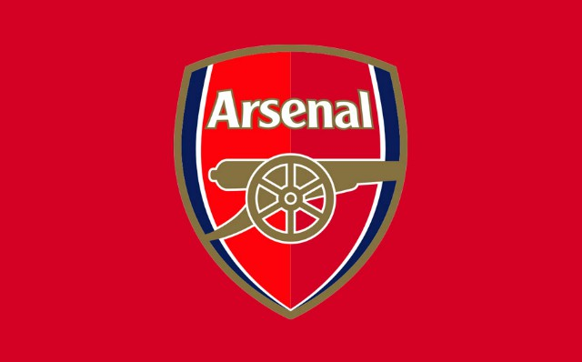
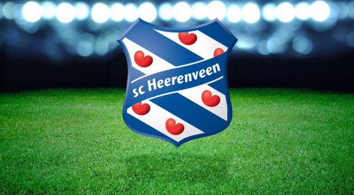

Op deze pagina vertel ik iets over mijzelf.
Ik ben Rutger de Boer, ik ben 15 jaar oud en ik woon in Groningen in de wijk Gravenburg.
Ik kom uit een gezin van 5.
Ik zit op het Augustinus in klas A4B.
In mijn vrije tijd vind ik het leuk om te voetballen. dit doe ik bij de club HFC'15.
Daar zit ik in de onder 17-3.
ik speel daar als verdediger meestal als rechtsachter en soms centraal achterin.
Ook vind ik het erg leuk om met mijn vrienden af te spreken.
Ik ga dan ook geregeld op de fiets naar Daniel, Jan of Luuk.
Die ook in deze Informatica klas zitten.
Zo nu en dan speel ik fifa met Luuk, jan of met mijn broetje dat vind ik ook leuk.
mijn gezin bestaat dus uit 4 personen en een hond. (Zie hierboven).
Met mijn gezin woon ik in Gravenburg dat is een wijk in Groningen.
Ik kijk vanaf mijn huis uit over de weilanden en de Friesestraatweg.
Mijn ouders werken allebij bij de gemeente Groningen.
Ik zit op het Augustinus.
Mijn broertje zit op basisschool de Aquamarijn in groep: 8.
Misschien gaat hij dus volgend jaar dus ook wel naar het Augustinus.
MIjn broertje zit ook op voetbal ook bij HFC'15 in de onder 12.
zoals ik net ook als zei zit ik op voetbal bij HFC'15.
Ook support ik de Engelse voetbalclub Arsenal uit Londen.
Dat vind ik een erg leuke club en ik zou het natuurlijk ook erg leuk vinden om een keer naar een wedstrijd van Arsenal te gaan.
Het ging de afgelopen jaren helaas wat minder met Arsenal maar gelukkig gaat het dit seizoen weer erg goed ze staan nu zelfs eerste. (Zie link).
Linkje naar de stand in de Premier League
Ook ben ik fan van SC Heerenveen daar heb ik ook een seizoenskaart van.
IK ga dan dus ook geregeld met mijn vader naar een wedstrijd van sc Heerenveen.

